Pipeline Gitlab Mario
Instância Carros
Nesse exercício vamos reaproveitar a istância , então se vc a excluiu por favor execute novamente o passo da criação da instância carros-api
Acessando o Gitlab
Acesse gitlab.com
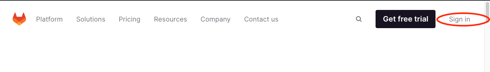
Entre com seu usuário e sua senha
Caso não tenha um usuario no gitlab vc pode logar com a conta do github, basta clicar no botão
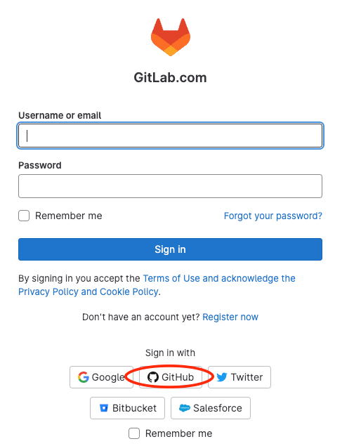
Se clicou no botão o sistema irá pedir as suas credenciais do github, isso e legal que fica com o mesmo login nas duas plataformas
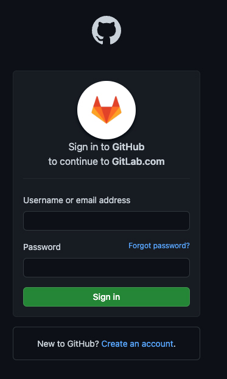
Fork do Projeto Mario
Vamos criar um fork do projeto Mario no seu usuário gitlab acesse: Projeto Mario
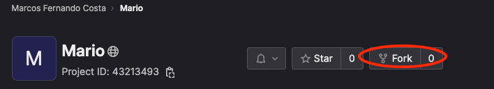
Nessa tela informe o namespace e clique em : Frok projetc
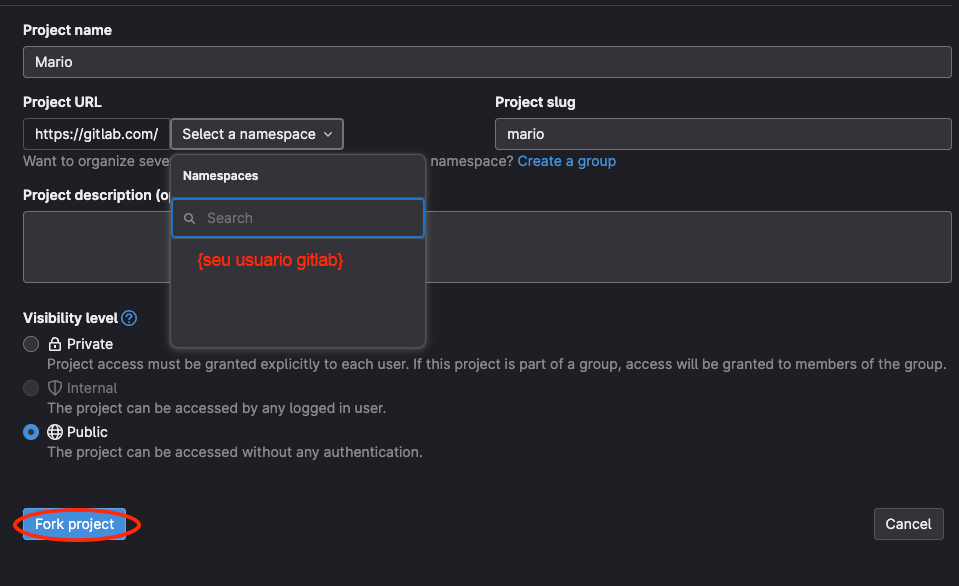
Config CI/CD
Vamos configurar o CI/CD então no menu lateral do projeto clique em:
 Procure o item e clique em: Expand
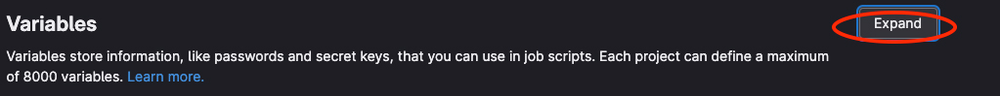
Então clique em: Add variable
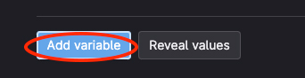
Então prencha os dados como na imagem abaixo e clique em: Add variable variavel:
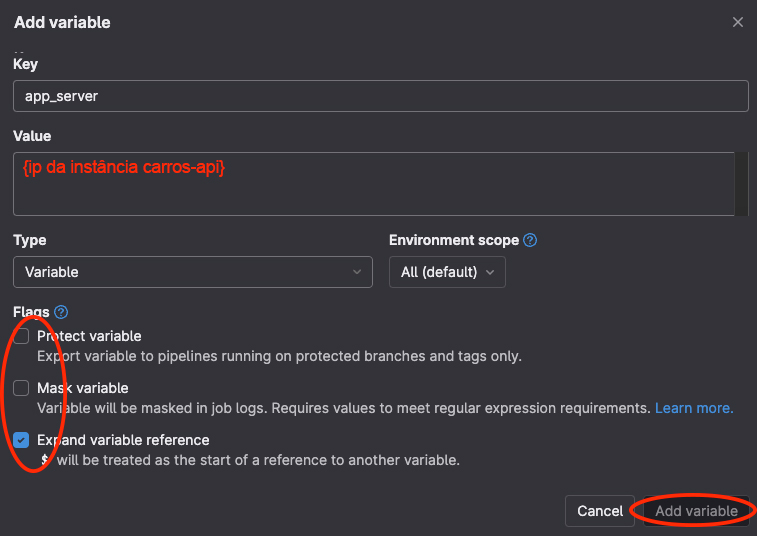
Então clique novamente em Add variable
Preencha os dados conforme a imagem abaixo: e depois confirme em Add variable variavel:
Então clique novamente em Add variable
Preencha os dados conforme a imagem abaixo: e depois confirme em Add variable variavel:
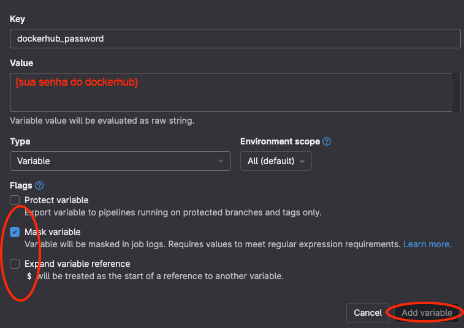
Preencha os dados conforme a imagem abaixo: e depois confirme em Add variable variavel:
Procure o item e clique em: Expand
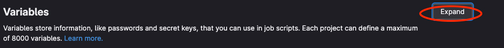
Então clique em: Add variable
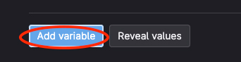
Então prencha os dados como na imagem abaixo e clique em: Add variable variavel:
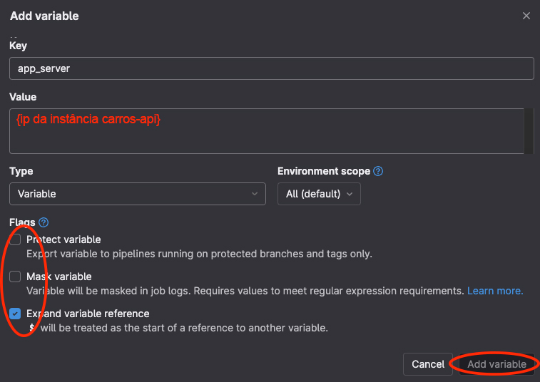
Então clique novamente em Add variable
Preencha os dados conforme a imagem abaixo: e depois confirme em Add variable variavel:
Então clique novamente em Add variable
Preencha os dados conforme a imagem abaixo: e depois confirme em Add variable variavel:
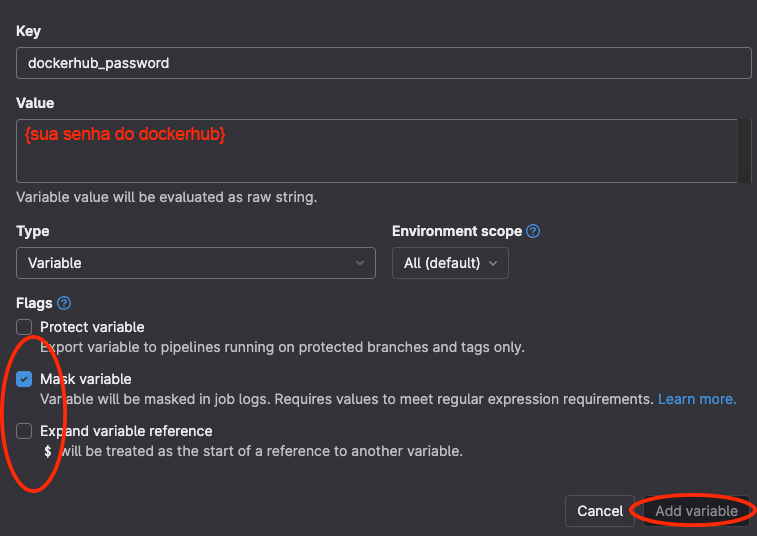
Preencha os dados conforme a imagem abaixo: e depois confirme em Add variable variavel:
 Demos ficar agora com essas variáveis abaixo:
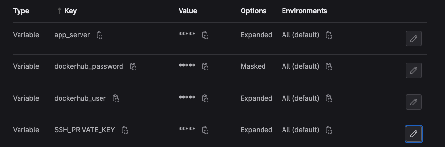
Demos ficar agora com essas variáveis abaixo:
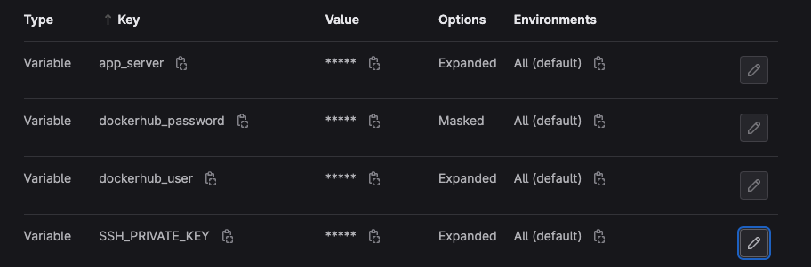
Procure o item e clique em: Expand
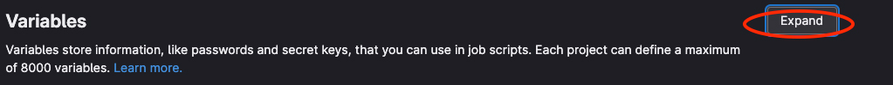
Então clique em: Add variable
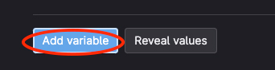
Então prencha os dados como na imagem abaixo e clique em: Add variable variavel:
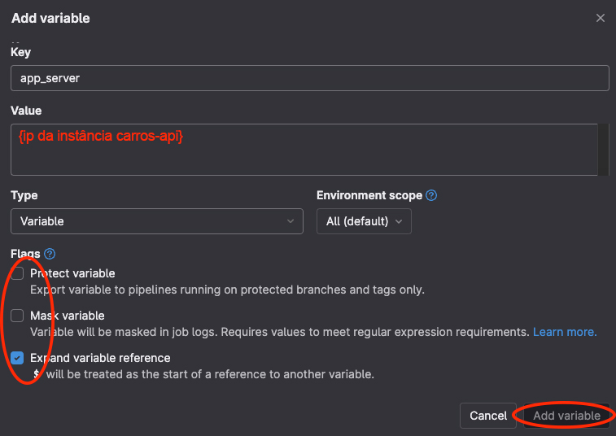
Então clique novamente em Add variable
Preencha os dados conforme a imagem abaixo: e depois confirme em Add variable variavel:
Então clique novamente em Add variable
Preencha os dados conforme a imagem abaixo: e depois confirme em Add variable variavel:
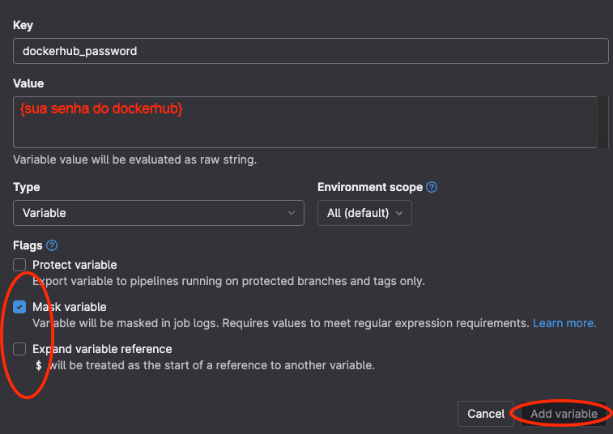
Preencha os dados conforme a imagem abaixo: e depois confirme em Add variable variavel:
Demos ficar agora com essas variáveis abaixo:
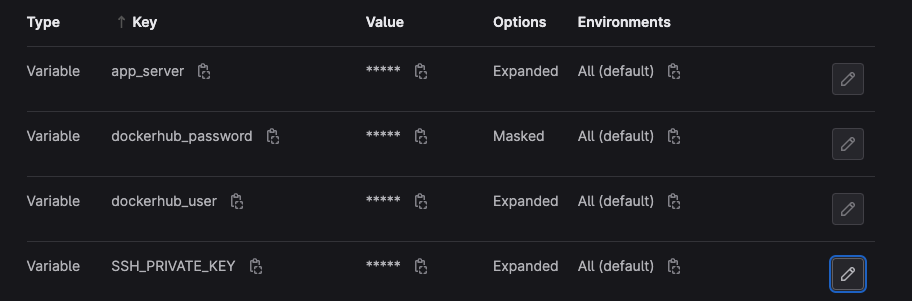
Pegando o token do repositório
Precisamos copiar o token do repositorio então no gitlab no seu repositório Mario no menu lateral do projeto clique em:
Procure a palavra clique em Expand
procure a parte como na imagem abaixo e clique no icone para copiar o token
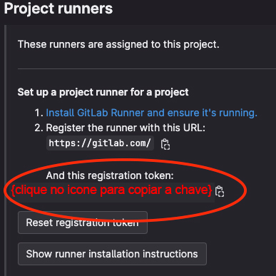
Procure a palavra clique em Expand
procure a parte como na imagem abaixo e clique no icone para copiar o token
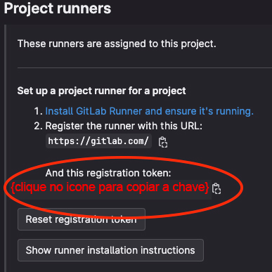
Acessando a instância carros-api
Caso você queira acessar o da máquina pelo browser, selecione a instância carros-api clique em Conectar,
na nova tela informe o usuário , depois clique em: Conectar.
Caso queira poderá usar o ou um cliente SSH instalado local na sua estação.
Criando do GitlabRunner
Os comandos abaixo irão refletir as imagens abaixo:
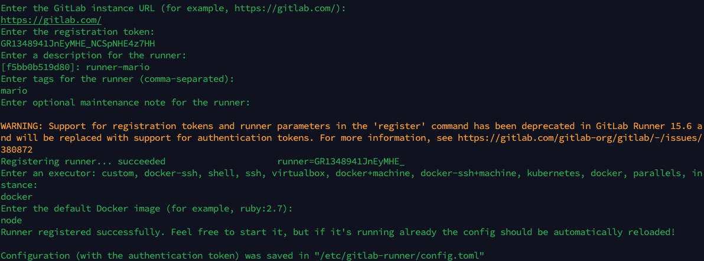

cd /home/ubuntu
mkdir runners
cd runners
mkdir mario
docker run --rm -it --link gitlab -v /home/ubuntu/runners/mario:/etc/gitlab-runner gitlab/gitlab-runner register
# o sistema vai pedir algumas informações:
#Enter the Gitlab instance URL (for example, https://gitlab.com/):
#informe: https://gitlab.com/ -> {de enter}
#Enter the registration token:
#cole o token que copiou do gitlab e cole aqui -> {de enter}
#Enter a description for the runner (comma-separated):
#informe: mario
#Enter optional maintenance note for the runner:
#de enter
#Deve apresentar Registering runner... succeeded .....
#Enter an executor: custon, docker-ssh, shell, sh ...
#infome: docker -> {de enter}
#Enter the default Docker image (for examle, ruby>2.7):
#informe node -> {de enter}
#Deve aparecer:
#Runner registered successfully. Feel free...
#Configuration (with the authentication token) as saved in "/etc/gitlab-runner/config.toml"
sudo su
chown -R ubuntu /home/ubuntu/runners
vim /home/ubuntu/runners/mario/config.toml
#procure a linha com o conteúdo: privileged = false e substitua para privileged = true
#isso da super privilégios para o runner na instância
#salve o arquivo
docker run -d --name mario-runner --restart always -v /home/ubuntu/runners/mario:/etc/gitlab-runner -v /var/run/docker.sock:/var/run/docker.sock gitlab/gitlab-runner
docker ps
#verifique se o container mario-runner está rodando.
Configurando o Runner no Projeto Mario
Por padrão o Gitlab usa runners gratuitos, mas as vezes não tem disponibilidade e precisamos esperar horas para executar nosso trabalho por isso vamos desligar os runners publicos e dizer para o Gitlab executar nosso build usando o runner que criamos
Acesse no menu do repositorio mario no Gitlab
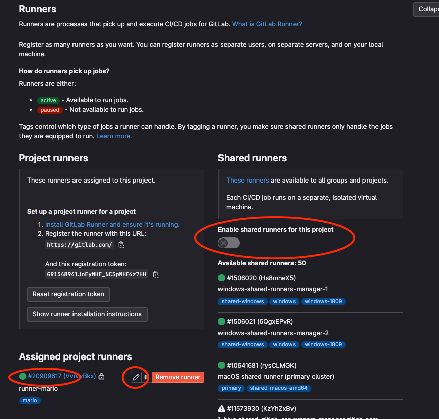
Desligue a chave:
Certifique que em Assigned project runners tenha uma bolinha verde na frente do runner
Clique no icone do lápis e deixe a configuração como abaixo:
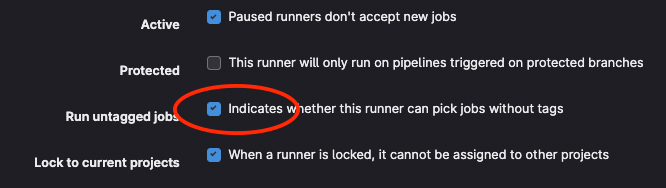
Finish
Se tudo deu certo até aqui, aguarde instruções para criar o arquivo do pipeline [.gitlab-ci.yml]
http://{ip elastico carros-api}:3000